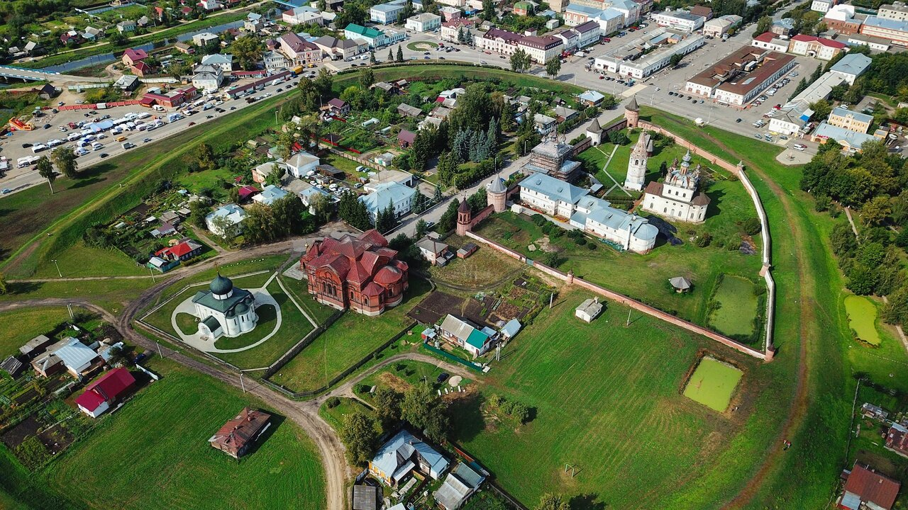

Юрьев-Польский
Юрьев-Польский — небольшой старинный город во Владимирской области, через который проходят маршруты Золотого кольца России. Он стоит в стороне от крупных туристических центров, на берегу реки Колокши. Юрьев-Польский отличается от других древнерусских городов тем, что не обладает природными укреплениями. Вокруг него не существует непроходимых лесов, болот или больших холмов, а Колокша имеет низкие берега.

Михайло-Архангельский монастырь располагается в центре Юрьева-Польского в кольце древних земляных валов XII века. Обитель была основана, по не подтверждённому преданию, в XIII веке князем Святославом Всеволодовичем. Как и весь город, монастырь был дотла разорен в годы Смуты и фактически заново заложен в XVII веке.

Георгиевский собор — один из немногих сохранившихся памятников домонгольской Руси и единственная домонгольская постройка, у которой известно имя зодчего. Храм был построен в 1230-1234 годах святым князем Святославом Всеволодовичем. Причем не в переносном, а прямом смысле слова — князь лично возглавлял все этапы строительства, в том числе был и его архитектором.